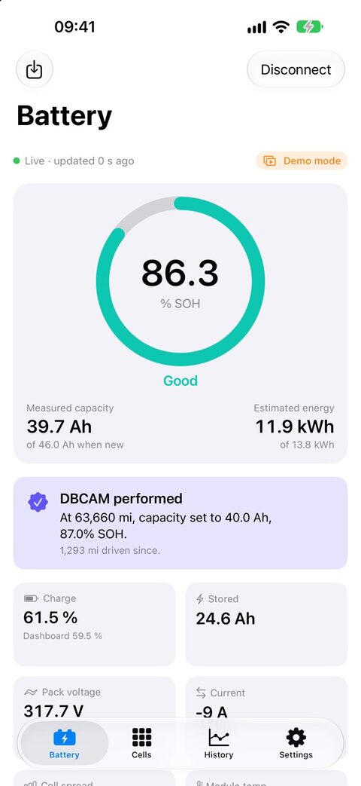
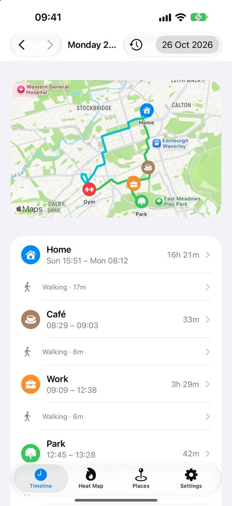
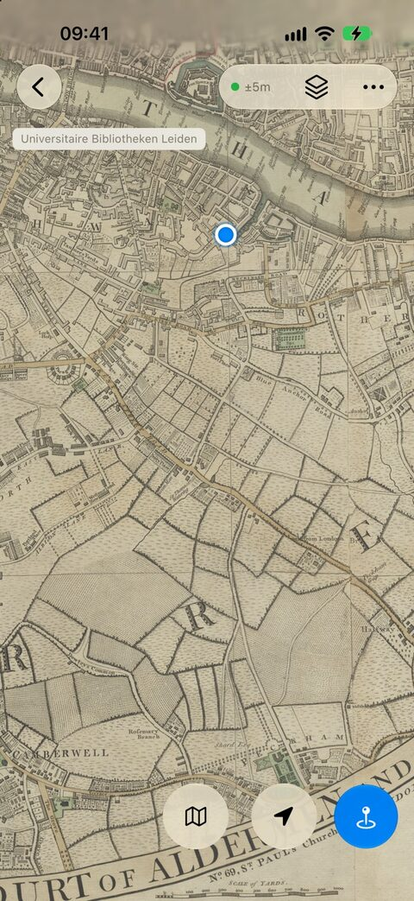
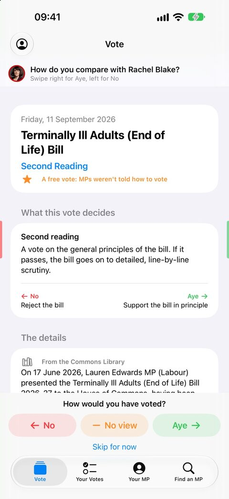

Apps
-

Amphora
Know the health of your plug-in hybrid’s battery, cell by cell.
Read the high-voltage battery of a Mitsubishi, Hyundai or Kia plug-in hybrid through a cheap OBD adapter. See how much capacity it has left, how every cell is doing, and how it changes over time.

-
Ubi Fui
Where you’ve been, kept on your iPhone.
Quietly records the places you stop, how long you stay and how you got there, so you can look back on any day, week or year. No account, no servers: your location never leaves your phone.

-

Terra Nota
Find yourself on any map.
See your live position on any map image, from an antique county map to a trail leaflet or a site plan. Calibrate it against a modern map, then explore with pins, colour-coded lists and historic maps from library collections.

-

Voter Empathy
House of Commons votes, on your phone.
See how your MP voted, say how you would have voted, and compare your answers with your MP, other MPs and the parties. Each vote has a plain-English summary and a House of Commons Library briefing.
